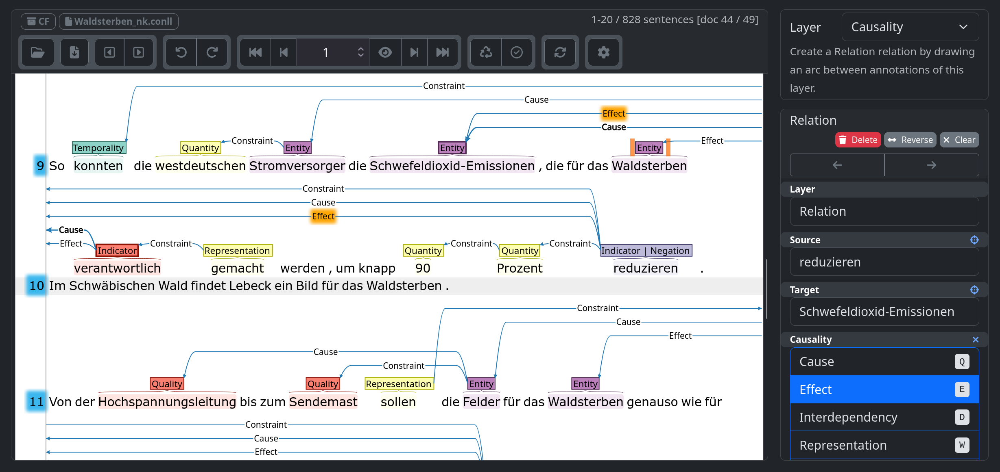

Eine Operationalisierung am Beispiel der sterben-Komposita im dt. Umweltdiskurs
Landwirtschaft und Pestizide verursachen Bienensterben.
Bienensterben bedroht Landwirtschaft.
Patrick Johnson
Wie lässt sich sprachliche Kausalattribution quantifizieren?
Wie strukturieren Kausalstrukturen politische Handlungsfähigkeit im dt. Umweltdiskurs?
📄 Stegmeier, J. & Müller, M. (2025). Die Korpora der DFG-Forschungsgruppe “Kontroverse Diskurse. Sprachgeschichte als Zeitgeschichte seit 1990”. Doi: 10.26083/tuprints-00031401.
\(\textit{WABI}\)
| Form | # | % |
|---|---|---|
| Aussterben | 3812 | 35% |
| — Waldsterben | 1837 | 15% |
| — Artensterben | 1562 | 13% |
| Massensterben | 692 | 6% |
| — Bienensterben | 549 | 4% |
| — Insektensterben | 490 | 4% |
| Fischsterben | 450 | 4% |
| Absterben | 373 | 3% |
\(\small \text{Annotationskorpus (4.434 Sätze): } \textit{Artensterben}, \textit{Bienensterben}, \textit{Insektensterben}, \textit{Waldsterben}\)
\(\small (C = \text{Cause}; E = \text{Effect}; I = [-1, 1])\)
\(\pm =\) Polarität; \(||I|| =\) Salienz
\[ (\text{Fipronil}; \text{Bienensterben}; 0{,}5) \]
\[ (\text{Landwirtschaftsministerin}; \text{Waldsterben}; -1) \]
\(\small (C = \text{Cause}; E = \text{Effect}; I = [-1, 1])\)
Das Insektensterben ist wahrscheinlich maßgeblich auf die intensive Landwirtschaft zurückzuführen. [SZ 1992] \[ (\text{Landwirtschaft}; \text{Insektensterben}; 0{,}75) \]
\(\pm =\) Polarität; \(||I|| =\) Salienz
\(\small (C = \text{Cause}; E = \text{Effect}; I = [-1, 1])\)
Neben dem Insektensterben leiden diese Arten auch unter einem Mangel an Brutplätzen. [SZ 2018] \[ (\text{Insektensterben}; \text{Arten}; -0{,}5) \] \[ (\text{Brutplätze}; \text{Arten}; 0{,}5) \]
\(\pm =\) Polarität; \(||I|| =\) Salienz
\(\small (C = \text{Cause}; E = \text{Effect}; I = [-1, 1])\)
\[ \begin{split} (\text{Verkehr}; \text{Waldsterben}; 0{,}5) \\ + (\text{Verkehr}; \text{Waldsterben}; 1) \\ \\ (\text{Autos}; \text{Waldsterben}; 0{,}5) \\ \\ \overline{= (\text{Verkehr}; \text{Waldsterben}; 1{,}5)} \\ (\text{Autos}; \text{Waldsterben}; 0{,}5) \\ \end{split} \]
📄 Johnson, P. (2026). Waldsterben 2.0 – Climate change as an attributed cause of forest diebacks. In: Landscapes in Language, Society and Cognition (Interdisciplinary Linguistics). Berlin/Boston: De Gruyter Mouton. (i. Dr.)
Etwa 58 Prozent der gesamten Stickoxid- Emissionen und 22 Prozent der Kohlendioxid-Emissionen, die für Waldsterben und Treibhauseffekt verantwortlich sind, werden vom Straßenverkehr im EG-Bereich produziert.
[taz 1990]
| Cause | n | ∅ I | % I |
|---|---|---|---|
| Saurer Regen | 9 | 0,87 | 6,0 |
| Stickoxid | 10 | 0,56 | 4,1 |
| Luftverschmutzung | 5 | 0,90 | 3,4 |
| Autos | 6 | 0,69 | 3,1 |
| Schwefeldioxid | 5 | 0,78 | 2,9 |
| Ozon | 6 | 0,54 | 2,5 |
| Verkehr | 4 | 0,75 | 2,3 |
Gesamt: ∅ \(||I||\) = 0,69 über 119 Entitäten (n=187)
Die Folgen davon bekommt er noch heute zu spüren, wenn es in der Klimadebatte heißt, dass auch das Waldsterben letztlich eine Erfindung der Wissenschaft gewesen sei, und das ist der Schaden, der bleibt.
[FAZ 2013]
| Cause | n | ∅ I | % I |
|---|---|---|---|
| Saurer Regen | 4 | 0,81 | 10,0 |
| Schwefeldioxid | 3 | 0,92 | 8,5 |
| Unternehmen | 2 | 0,75 | 4,6 |
| Wissenschaft | 1 | 1,00 | 3,1 |
| Ökobauern | 1 | 1,00 | 3,1 |
| Altlast | 1 | 1,00 | 3,1 |
| Braunkohlekraftwerk | 1 | 1,00 | 3,1 |
Gesamt: ∅ \(||I||\) = 0,79 über 35 Entitäten (n=41)
Es mehren sich die Signale, dass wir durch den Klimawandel in Deutschland auf ein neues Waldsterben zusteuern.
[taz 2019]
| Cause | n | ∅ I | % I |
|---|---|---|---|
| Klimawandel | 8 | 0,71 | 27,5 |
| Luftverschmutzung | 2 | 1,00 | 11,6 |
| Trockenheit | 2 | 1,00 | 11,6 |
| Hirsch | 1 | 1,00 | 5,8 |
| Erderwärmung | 1 | 1,00 | 5,8 |
| Saurer Regen | 4 | 0,25 | 5,8 |
| Dürre | 1 | 1,00 | 5,8 |
Gesamt: ∅ \(||I||\) = 0,66 über 15 Entitäten (n=29)
Ein rätselhaftes Bienensterben bedroht die Existenz zahlreicher Erdbeer-Bauern südlich der niederländischen Stadt Breda.
[taz 1990]
| Effect | n | Kategorie |
|---|---|---|
| Ernte | 2 | Landwirtschaft |
| Bienenkrankheiten | 1 | Biota |
| Bundesamt | 1 | Politik |
| Erdbeer-Bauern | 1 | Landwirtschaft |
| Naturhaushalt | 1 | Biota |
| Landwirtschaft | 1 | Landwirtschaft |
| Kolonien | 1 | Biota |
Gesamt: ∅ \(||I||\) = 0,82 über 25 Entitäten (n=27)
Ein rätselhaftes Bienensterben bedroht die Existenz zahlreicher Erdbeer-Bauern südlich der niederländischen Stadt Breda.
[taz 1990]
| Effect | n | ∅ I | % I |
|---|---|---|---|
| Landwirtschaft | 15 | -0,8 | -48,4 |
| Politik | 2 | -1,00 | -12,9 |
| Biota | 4 | -1,00 | -12,9 |
| Diskurs | 2 | +0,75 | 9,7 |
| Abstrakt | 2 | +0,75 | 9,7 |
| Emission | 1 | +0,50 | 3,2 |
| Mensch | 1 | +0,50 | 3,2 |
Gesamt: ∅ \(||I||\) = 0,82 über 25 Entitäten (n=27)
Fatal auch das Bienensterben, das alle Arten erfasst: Wildbienen, Waldbienen, Weltbienen.
[taz 2017]
| Effect | n | ∅ I | % I |
|---|---|---|---|
| Biota | 8 | -1,00 | -48,0 |
| Diskurs | 3 | -0,83 | 20,0 |
| Landwirtschaft | 1 | -1,00 | -8,0 |
| Mensch | 3 | -1,00 | -8,0 |
| Politik | 1 | -1,00 | -8,0 |
| Abstrakt | 6 | +0,92 | 4,0 |
| Emission | 2 | +0,70 | 4,0 |
Gesamt: ∅ \(||I||\) = 0,90 über 22 Entitäten (n=24)
Im Kampf gegen das Artensterben will die Bundesregierung einzigartige Rotbuchenwälder in Wildnis zurückverwandeln.
[Spiegel 2007]
| Cause | n | ∅ I | % I |
|---|---|---|---|
| Politik | 29 | -0,88 | -43,5 |
| Mensch | 15 | -0,86 | -22,2 |
| Abstrakt | 9 | -0,93 | -14,3 |
| Biota | 9 | -0,56 | -8,5 |
| Wirtschaft | 3 | -1,00 | -5,1 |
| Naturschutz | 2 | -1,00 | -3,4 |
| Diskurs | 1 | -1,00 | -1,7 |
Gesamt: ∅ \(||I||\) = 0,82 über 60 Entitäten (n=70)
Bis 2020 wollen die EU-Mitglieds-
staaten das Artensterben aufhalten. [taz 2012]
| Cause | n | ∅ I | % I |
|---|---|---|---|
| Politik | 21 | -0,89 | -68,1 |
| Naturschutz | 3 | -1 | -10,7 |
| Mensch | 3 | -0,83 | -9,0 |
| Abstrakt | 3 | -0,83 | -9,0 |
| Landwirtschaft | 1 | -0,75 | -2,7 |
| Biota | 1 | -0,17 | -0,6 |
Gesamt: ∅ \(||I||\) = 0,86 über 27 Entitäten (n=32)
Um das Artensterben zu stoppen, muss sich grundsätzlich etwas ändern. [taz 2018]
| Cause | n | ∅ I | % I |
|---|---|---|---|
| Politik | 25 | -0,92 | -35,2 |
| Abstrakt | 23 | -0,82 | -27,6 |
| Naturschutz | 6 | -1,00 | -9,2 |
| Diskurs | 6 | -0,88 | -8,4 |
| Mensch | 4 | -0,88 | -5,4 |
| Wirtschaft | 3 | -0,88 | -5,4 |
| Landwirtschaft | 2 | -1,00 | -4,6 |
Gesamt: ∅ \(||I||\) = 0,91 über 59 Entitäten (n=74)
| Token | Classification | Confidence |
|---|---|---|
| Die | O | 0,57 |
| Bundesregierung | ENTITY | 0,59 |
| stoppt | INDICATOR | 0,54 |
| das | O | 0,30 |
| Waldsterben | ENTITY | 0,65 |
🤗 pdjohn/C-EBERT-610m
padjohn/cbert
| Indicator | Entity | Relation | Confidence |
|---|---|---|---|
| stoppt | Bundesregierung | MONO_POS_CAUSE | 0,99 |
| stoppt | Waldsterben | MONO_NEG_EFFECT | 0,88 |
📄 Johnson P. (2026). C-BERT: Factorized Causal Relation Extraction. Doi: 10.26083/tuda-7797. (Preprint)
| Rang | Nachbar | \(\cos(\theta)\) |
|---|---|---|
| 1 | Artenschwund | 0,64 |
| 2 | Kulturlandschaft | 0,43 |
| 3 | Nitrate | 0,41 |
| 4 | Artensterben | 0,40 |
| 5 | Welternährung | 0,40 |
| Rang | Nachbar | \(\cos(\theta)\) |
|---|---|---|
| 1 | Klimaänderung | 0,60 |
| 2 | Erwärmung | 0,57 |
| 3 | Klimawandel | 0,47 |
| 4 | Treibhauseffekt | 0,46 |
| 5 | Erderwärmung | 0,43 |
He’s sick, because he has a fever.
He must be sick, because he has a fever.
I conclude that the has a fever, because I know he is sick and being sick generally causes fever.
He has a feverE, because he is sickC.
He’s sickC, because he has a feverE.
\[\small \overrightarrow{v}_{\text{Mensch}_C} = [\text{Mensch}, \text{Klimawandel}, \text{Artensterben}, ... ] = [0; 343{,}75; 30{,}75; ... ]\] \[\small \overrightarrow{v}_{\text{Mensch}_E} = [\text{Mensch}, \text{Klimawandel}, \text{Artensterben}, ... ] = [0; -34{,}5; -2; ...]\]
\[\small \overrightarrow{v}_{\text{Mensch}} = \overrightarrow{v}_{\text{Mensch}_C} \oplus \overrightarrow{v}_{\text{Mensch}_E}\]
\(\textit{nk}_\pm\) = Ursache von | Kampf gegen \(\textit{WABI}_i\)
\(\textit{oa}_\pm\) = verursacht | stoppt \(\textit{WABI}_i\)

\(\tiny |K_A| \approx 4.300; \quad K_A \subsetneq K_U(\textit{Artensterben} \cup \textit{Bienensterben} \cup \textit{Insektensterben} \cup \textit{Waldsterben})\)